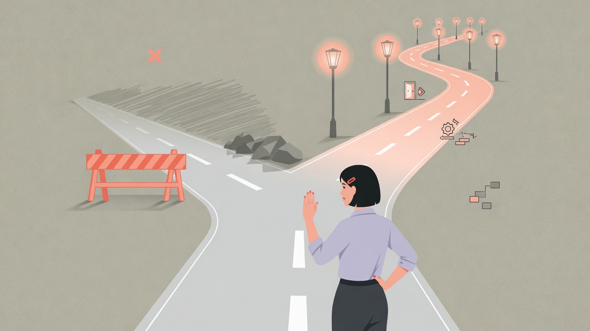

When people talk about identity and SSO, they reach for algorithms: token lifetimes, key rotation, SAML vs OIDC, session fixation. Those details matter. In systems I have built and operated, the outages and near-misses that hurt most started earlier — as social and product failures wearing security clothing.

Identity is a dependency graph of humans
An identity platform is not only a service. It is:
- Who is allowed to grant access
- How contractors, partners, and acquisitions show up
- What "logout" means across devices and apps
- Which team gets paged when login breaks on a Sunday
- How quickly a leaver loses access in reality, not in policy PDFs
Crypto bugs are rare relative to misowned workflows. The system can be textbook-correct and still fail the organization.
Failure mode 1: Ambiguous system of record for "who is this person?"
Enterprises collect identities the way rivers collect silt: HRIS, directories, partner IdPs, legacy user tables, support tools that mint exceptions. If you cannot answer "what is the canonical identifier, and who can change it?" you will eventually:
- Duplicate humans
- Orphan entitlements
- Merge the wrong accounts
- Build reconciliation jobs that become the real product
SSO does not fix identity entropy. It multiplies whatever model you already have. Design move: pick a primary subject key strategy, document merge/split procedures, and make account recovery a first-class flow — not a Zendesk folklore.
Failure mode 2: Special cases without expiry
Sales needs a demo tenant. Support needs impersonation. A partner needs a long-lived integration user. Security accepts a temporary bypass. Temporary becomes permanent. Permanent becomes unmonitored. Unmonitored becomes the breach path. Design move: every exception has an owner, an expiry, metrics, and a removal plan. Impersonation and break-glass are products with audit trails, not Slack approvals.
Failure mode 3: Logout and session mental models differ by app
Users think "I logged out." Your distributed sessions think "two refresh tokens and a cache entry are still valid." Mobile thinks something else. A partner app never got the memo. This is not merely UX. It is an access-control bug with a friendly face. Design move: define session lifecycle as an explicit cross-app contract. Test logout like you test login. Include shared devices and support scenarios.
Failure mode 4: Rollouts that treat auth like a feature flag toy
Identity changes have asymmetric risk. A broken profile color is annoying. A broken token validation is company-wide stoppage. Yet teams still ship auth changes like UI tweaks: wide rollouts, thin dashboards, no rehearsal of rollback. Design move: progressive exposure, synthetic login journeys per IdP, clear rollback that does not require a hero, and change freezes around known peak login events.
Failure mode 5: Ownership is "security and also platform and also the app"
When login fails, three teams page each other. When it works, nobody funds hardening. Diffused ownership produces brittle reliability. Design move: a single operational owner for the login path, with written dependencies on IdP, DNS, email, device services, and app session layers. Security sets policy; platform runs the path; apps integrate against a stable interface. Blurry RACI is an availability risk.
What good looks like
Strong identity programs I have seen share a few traits:
- Boring standards on the outside (OIDC/SAML done plainly)
- Strict internal models for subjects, credentials, devices, and grants
- Auditability as a product feature
- Recovery and leaver flows tested, not assumed
- Customer-visible status when auth is degraded
- Load and failure testing of login, not only of core APIs
Notice how little of that is "pick the trendy token format."
Questions before you add another identity feature
- Who is the human-level source of truth?
- What is the break-glass path, and who audits it?
- How does a user understand their sessions?
- What happens to downstream caches on revoke?
- Which team’s error budget does login reliability consume?
- Can we re-run last quarter’s incidents as game days?
If those answers are soft, new federation features will add surface area, not safety.
Closing
Identity systems do fail cryptographically — and you should hire people who care about that deeply. But if you only harden tokens while leaving ownership, exceptions, session semantics, and rollout discipline vague, you will still fail. They fail socially first: unclear truth, unowned edges, temporary forever, and teams that cannot coordinate under stress. Build the social protocol as carefully as the crypto protocol. Users feel both. Attackers only need one to be weak.
Comments
Sign in with GitHub to join the discussion.